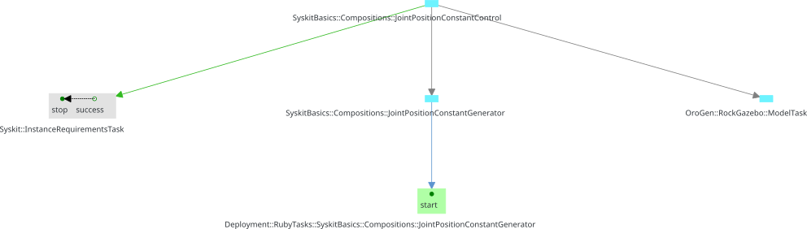

Generalities
- The Main action interface
- Actions, tasks, missions and jobs
- Instanciating actions
- What happens when actions are instanciated
- What happens when missions are dropped
- "Restarting"
- Refining and reusing existing actions
All the actions within a Syskit are all the "things" the system can do. The
actions are gathered within "action interfaces", which are repositories of
actions that "work together". They are all subclasses of Roby::Actions::Interface.
A template interface can be created with syskit gen action. The
corresponding file lies in models/actions/ and its tests in test/actions/
The only way we know how to create new actions, so far, is by exporting component
networks through profiles. Component
networks defined in profiles can be "exposed" as actions with the use_profile
statement. Each definition gets a corresponding action named ${defname}_def,
which we have seen for instance in the syskit IDE.
module MyApp
module Actions
class Navigation < Roby::Actions::Interface
use_profile Profiles::Navigation
end
end
end
Actions from an interface can be made available in another with the use_library
statement
module MyApp
module Actions
class UI < Roby::Actions::Interface
use_library Navigation
end
end
end
The Main action interface
One predefined action interface class is special, as it is the one that is available
globally, the Main interface. It is available as ${AppName}::Actions::Main. It
is the interface that you set up with the Robot.actions block in the robot
configuration.
One usually only adds actions there using the use_profile and use_library
statements, as e.g.
Robot.actions do
use_profile MyApp::Profiles::Base
use_library MyApp::Actions::UI
end
Actions, tasks, missions and jobs
Just a bit of vocabulary …
- actions are the definition of "something" the system can do. They are instanciated when they are added to the plan for execution
- the plan is the data structure in which Syskit manages all the system's runtime state. It is essentially a graph of tasks
- tasks are the basic building block used to track execution of parts of the system. Compositions and components are tasks. Tasks emit and receive events, which is the unit of control and monitoring.
- missions are tasks that have been marked as "important". They represent the current goal(s) of the Syskit system, and are used by the garbage collection to determine what should be stopped.
- jobs are missions which have a job ID assigned to them. Only jobs are shown in UIs such as the Syskit IDE.
In addition, when instanciated, an action is represented by a single task in the plan. This task will often be the root of a subplan, that is a set of other tasks that actually implement the action.
All actions work this way: they generate a single "root" task, and create a network of other tasks that support it. Syskit does this from component network definitions. One can also do it manually in e.g. action methods.
For instance, the arm_cartesian_constant_control_def action is represented by its
toplevel composition. This task is
the one task that is registered as a mission in the plan.
Instanciating actions
Within action interfaces, actions are only definitions of what the system can do. To run them, one needs to instanciate them and add them to Syskit's plan. Manually, one can use the Syskit IDE or the syskit shell to start an action. Programatically, they can be added in two ways:
-
using the
Robotglobal interface with theRobot.action_name!(arg: ...)syntax. For instance, the following would look for ago_toaction on the main interface and activate itRobot.go_to!(x: 10, y: 20) -
by adding the action to the plan manually, for instance:
Roby.plan.add_mission_task( MyApp::Actions::Navigation.go_to(x: 10, y: 20) )
What happens when actions are instanciated
When instanciated, any action is first added into the plan as a planning pattern. This is a pair of tasks: - one task that represents the action itself in an abstract way, - one task that represents the creation of all the tasks necessary to actually execute the action. This is called the planning task.
For instance, adding a definition to a plan creates a task of the same type than
the definition's toplevel, and a planning task of type Syskit::InstanceRequirementsTask

Then Syskit's scheduler will first have to execute the planning task, which will replace the planned task (the action-represented-in-an-abstract-way task) by the actual tasks that can be executed:

Which will then be scheduled (again) by Syskit's scheduler.
This representation has two advantages:
- it allows to explicitely order the plan generation (the planning step) using Syskit's event scheduling primitives
- it allows to do resolve all the planning tasks of a certain kind globally, as it is done by e.g. Syskit to resolve the component network taking into account everything that should be running in the whole system (network_generation.html)
What happens when missions are dropped
Dropping a mission is telling Syskit that the mission is not anymore an objective of the system. Syskit will terminate anything that is not in use by other missions, but leave the rest of the system alone.
"Restarting"
In the Syskit IDE, "restarting" a job is dropping it and creating a new one at the same time. When dealing with stateless actions (i.e. all profile definitions), this essentially does nothing:
- dropping the current mission is marking it as "not needed"
- creating the same mission with the same arguments will make syskit deploy it and generate a network that is exactly like the currently running one
- since the current network and the old ones are identical, Syskit will just keep the current system.
To actually restart the current component(s), you need to drop and then start.
Refining and reusing existing actions
Generally speaking, action interfaces can be refined and reused.
"Refined" means to "tune" the actions for specific systems, or to provide the
implementation of abstract actions that were defined for the purpose of
creating higher-level behaviors (e.g. state machines) without getting into
the specifics of how these behaviors will be executed. This is done by
subclassing the "parent" interface, usually while keeping the name but
placing it into the specific system's namespace, for instance, in
models/actions/navigation.rb:
module Generic
module Actions
class Navigation < Roby::Actions::Interface
end
end
end
is then refined for a gazebo robot configuration in simulation by creating
models/actions/gazebo/navigation.rb this way:
require "generic/models/actions/navigation"
module MyApp
module Actions
module Gazebo
class Navigation < Generic::Actions::Navigation
end
end
end
end
"Reused" means to create composite actions using actions from other
interfaces, but without the ability of changing the reused actions. This is
done with the use_library statement. For instance, the Navigation
interface we just refined can be reused in a UI action interface which
defines all the actions available to a control UI:
require "my_app/models/actions/gazebo/navigation"
module MyApp
module Actions
module Gazebo
class UI < Roby::Actions::Interface
use_library Navigation
end
end
end
end
These techniques usually lead to a double refine & reuse pattern, where
the generic abstract actions are linked with a use_library and then refined
by subclassing and again a use_library: